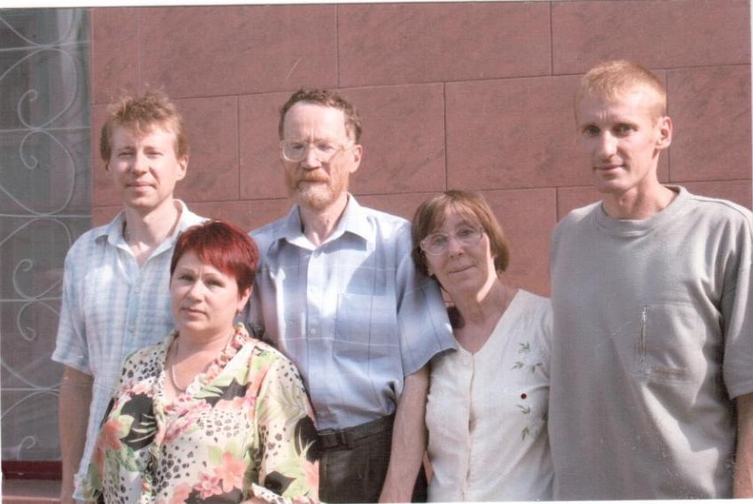

История семьи
Они прожили вместе более пятидесяти лет.
Познакомились студентами механико-математического факультета Томского государственного университета. На одной из фотографий тех лет Лариса Петровна написала: «Моему Юрке». Эта надпись пережила десятилетия и стала коротким рассказом о всей их жизни.
Поженились 14 декабря 1970 года. Воспитали двух сыновей — Юрия и Константина.

Они вместе учились, вместе работали, вместе воспитывали детей, вместе старели и до последних дней оставались рядом друг с другом.
Лариса Петровна родилась во время войны на Алтае. Её отец, Пётр Ильич Курносов, был на фронте. Мать, Евгения Николаевна Ковалёва, работала педагогом. После окончания школы в Барнауле Лариса поступила на мехмат Томского университета.
Юрий Афанасьевич родился в городе Асино. Его мать, Федосия Владимировна Пешкичева, прожила трудную жизнь. Не окончив школы, она научилась писать вместе со своими детьми. Всю жизнь работала санитаркой и уборщицей, вязала и во время войны отправляла на фронт тёплые вещи для солдат.
Лариса Петровна была человеком редкой внутренней силы. Волевая, целеустремлённая, спокойная и удивительно жизнелюбивая. Она умела находить общий язык с людьми и никогда не унывала. У неё всегда были друзья, знакомые и люди, готовые помочь. Но прежде всего она сама помогала другим.
Юрий Афанасьевич был настоящим математиком по складу характера — рассудительным, вдумчивым и обстоятельным. Он любил точность, знания и красоту окружающего мира. Хорошо разбирался в грибах, растениях и птицах, любил рыбалку и прогулки на природе.
Они оба очень любили людей. Их дом всегда был открыт для гостей. За столом собирались друзья, коллеги, соседи, родственники.
Для многих они были преподавателями. Для других — коллегами, друзьями, соседями. Для нас они были центром семьи, примером верности, трудолюбия, любознательности и любви к людям.